“frog croaking by a stream in the woods.”
t = 0.5Steering the "frog croaking" feature across layers 8/12/16.
Notice how the sound at alpha=0 changes for different layers, as alpha increases.
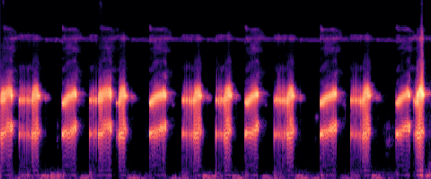
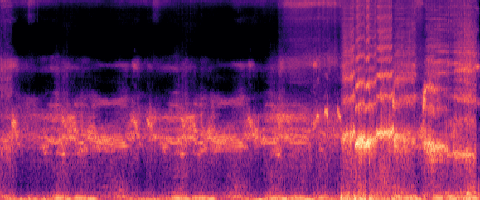
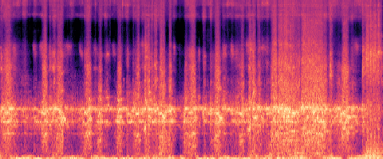
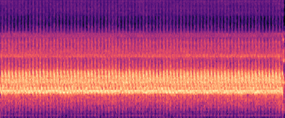
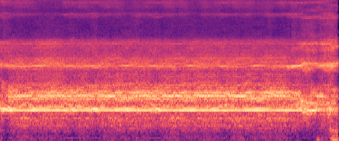
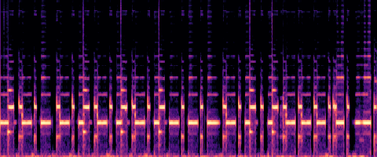
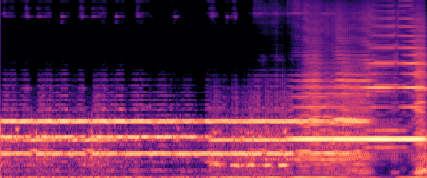
“Trumpet plays a slow, lyrical melodic line.”
t = 0.5Steering the "Trumpet" feature across layers 8/12/16.
Notice how the sound at alpha=0 changes for different layers, as alpha increases.
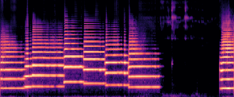
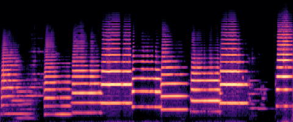
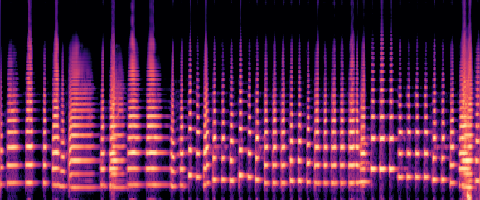
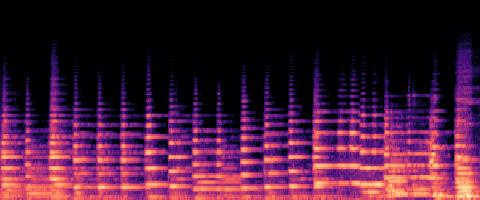
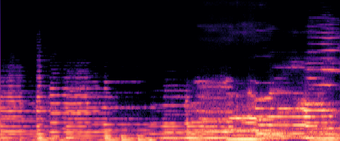
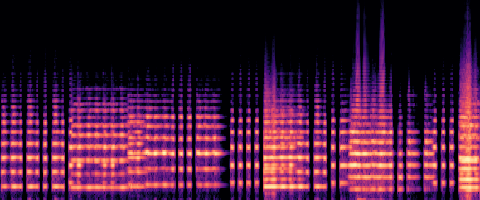
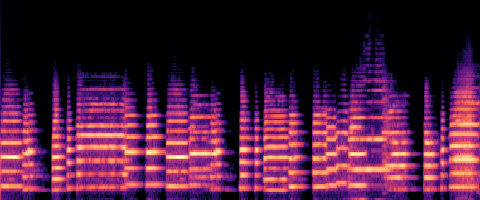
“Sound of muted footsteps.”
t = 0.5Steering the "Sound of muted footsteps" feature across layers 8/12/16.
Notice how the the steering adds ringing to the sound.
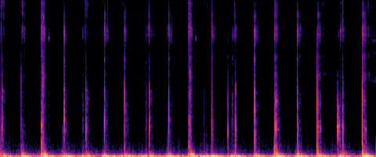
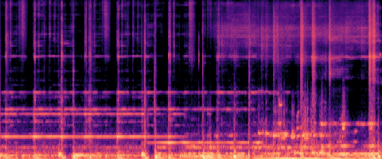
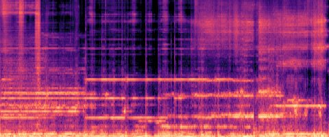
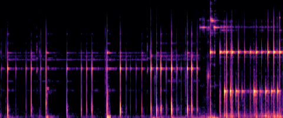
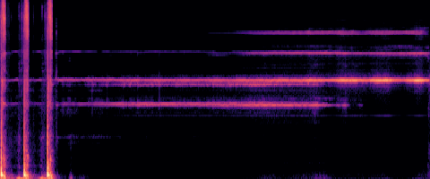
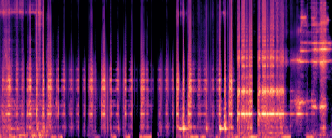
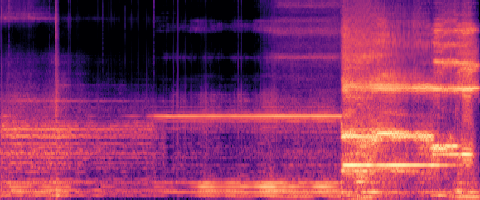
“Stuttering chirps of a sparrow, quick and repetitive.”
t = 0.5Steering the "Chirps" feature across layers 8/12/16.
Notice how the the steering changes chirping to buzzing. Especially Layer 16.
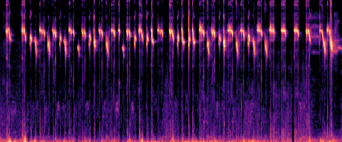
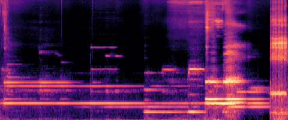
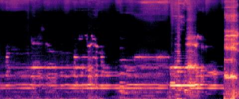
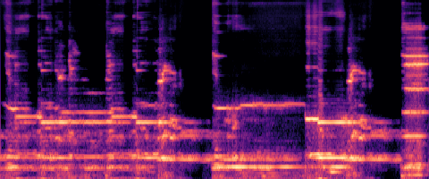
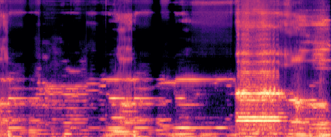
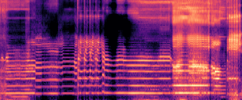
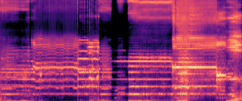
“Water dripping.”
t = 0.5Steering the "Water dripping" feature across layers 8/12/16.
Notice how the rate of dripping changes as alpha increases.
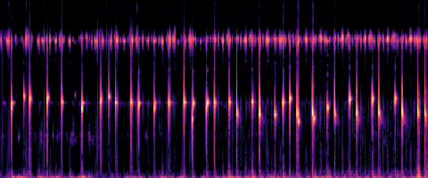
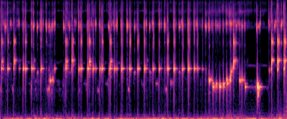
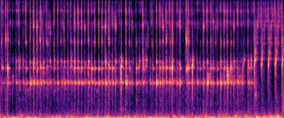
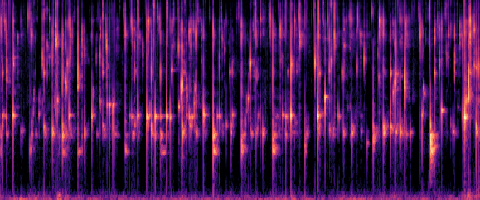
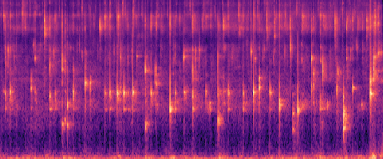
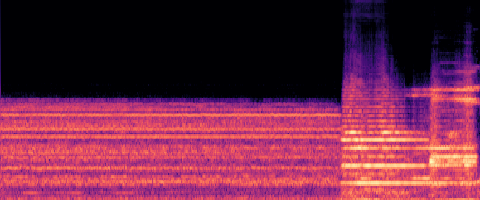
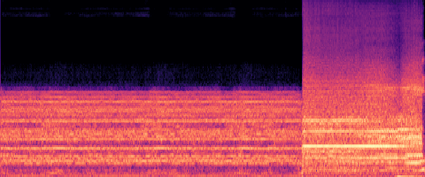